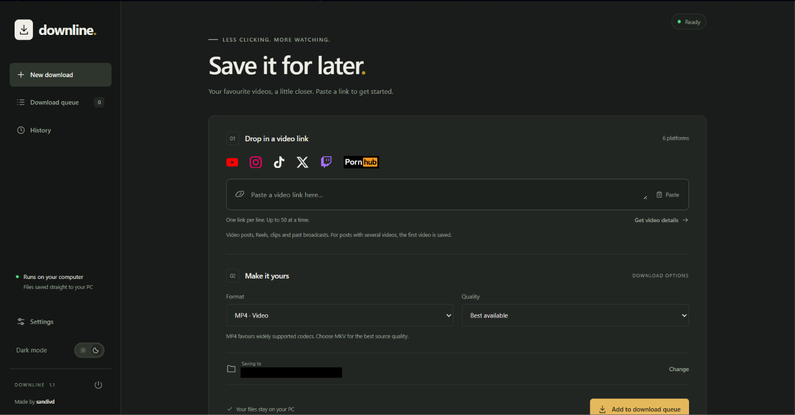
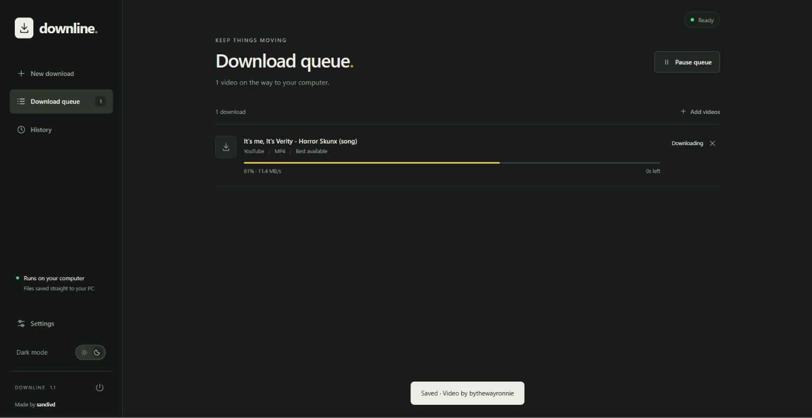
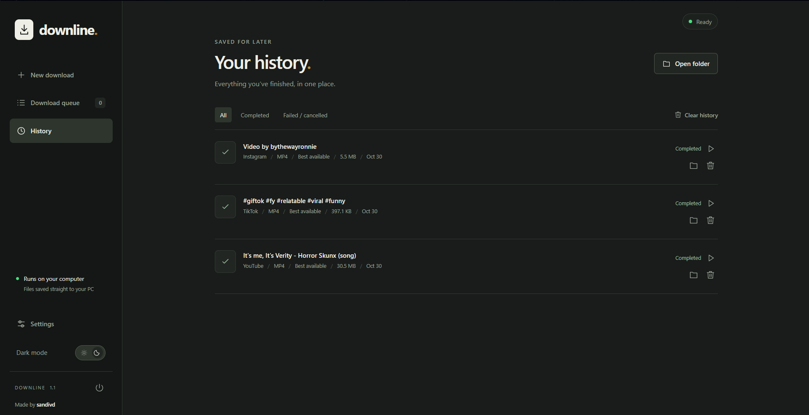

Paste a link.
A video, a Reel, a clip. Add one link or queue up to 50 at once.
Your favourite videos, a little closer.
Paste a link. Pick your format.
Keep it on your computer.
Free & open source · Runs on your PC

A video, a Reel, a clip. Add one link or queue up to 50 at once.
Choose MP4 or MKV for video, or MP3 for audio. Pick your preferred quality.
Save to your own folder. Find finished downloads in your history, ready to open.
Available quality depends on the original video. Site restrictions and sign-in requirements still apply.
A clear queue for what’s on the way.
A history for what’s already yours.

Track progress, pause waiting downloads, or cancel individual jobs. Set up to three simultaneous downloads.

Find completed downloads in one place. Open the video, reveal its folder, or clear the list without deleting your files.
Pick a folder and keep your downloads there. No Downline cloud storage to manage.
Settings and history stay on your computer. The download engine connects directly to the source sites.
A clean interface with both themes, a remembered preference, and room to breathe.
Download and extract the entire ZIP.
Double-click Start Downline.cmd.
Leave setup open while it downloads the tools. Then you’re ready.
Current build requires Brave Beta.
First setup needs internet, a few minutes, and roughly 300–500 MB of free space. No terminal commands or separate Python installation needed.
This website introduces Downline and provides the download. The app runs a small service on your PC and uses a browser window for its interface. Downloads happen on your computer; you can’t download videos through this website.
Yes, the current Windows launcher uses Brave Beta. If it can’t find your installation, it asks you to select the executable. You can also run Choose Brave Beta.cmd to select it. Other browsers aren’t automatically selected in this build.
Downline accepts individual videos from YouTube, Instagram, TikTok, X / Twitter and Pornhub, plus Twitch clips and past broadcasts. It doesn’t download whole profiles, playlists, photo-only posts or active live streams. Posts with several videos normally save the first video.
Support doesn’t guarantee every link works. Source-site changes, regional restrictions and account access can prevent downloads. Some sites may need your own cookies file in Settings. Downline doesn’t bypass age checks, DRM or regional blocks.
Downloads go to Downloads / Downline by default, or the folder you choose. Settings and history are stored locally on your PC. Clearing the history removes entries, not your downloaded videos. No Downline account is needed.
Setup downloads Python, yt-dlp, FFmpeg and Deno from their upstream projects. Keep the setup window open and allow a few minutes. They live beside the app, without administrator access or changes to your system PATH. The source and licence information are included in the ZIP.
Use Settings → Check for updates to update the download engine after finishing your queue. To update Downline itself, quit with the sidebar power button and replace the app files, keeping the existing runtime folder. Closing only the window leaves the local service running so downloads can finish.